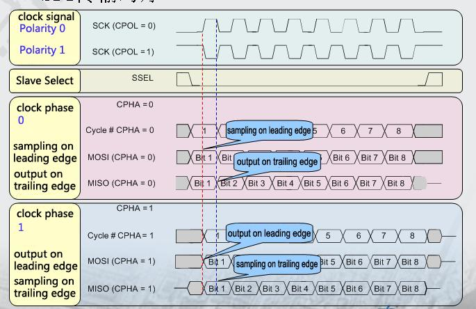
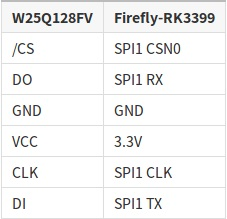

SPI¶
Introduction¶
SPI is a high-speed, full-duplex, synchronous serial communication interface for connecting microcontroller, sensors, storage devices, etc.The derivation of SPI2 is done on the double row extension pins of ROC-RK3399-PC Pro . Users can check the bottom plate silk screen by themselves.
How SPI works¶
SPI works in a master-slave mode, which typically has one master device and one or more slave devices, requiring at least four wires, respectively:
CS slice selection signal
SCLK clock letter
MOSI master device data output and slave device data input
MISO master device data input and slave device data output
The Linux kernel uses a combination of CPOL and CPHA to represent the four working modes of the current SPI:
CPOL＝0，CPHA＝0 SPI_MODE_0
CPOL＝0，CPHA＝1 SPI_MODE_1
CPOL＝1，CPHA＝0 SPI_MODE_2
CPOL＝1，CPHA＝1 SPI_MODE_3
CPOL : Represents the state of the initial level of the clock signal, 0 is the low level and 1 is the high level.
CPHA : Is sampling along which clock, 0 is sampling along the first clock and 1 is sampling along the second clock.
The waveforms of SPI’s four working modes are as follows:

Drive coding¶
The following W25Q128FV Flash module as an example of a simple introduction to the preparation of SPI driver.
Hardware connection¶
The hardware connection between ROC-RK3399-PC Pro and W25Q128FV is shown in the following table:

Makefile/Kconfig¶
Add the corresponding driver file configuration in kernel/drivers/spi/Kconfig:
config SPI_FIREFLY
tristate "Firefly SPI demo support "
default y
help
Select this option if your Firefly board needs to run SPI demo.
Add the corresponding driver file name in kernel/drivers/spi/Makefile:
obj-$(CONFIG_SPI_FIREFLY) += spi-firefly-demo.o
Select the added driver file in config, such as:
│ Symbol: SPI_FIREFLY [=y]
│ Type : tristate
│ Prompt: Firefly SPI demo support
│ Location:
│ -> Device Drivers
│ -> SPI support (SPI [=y])
│ Defined at drivers/spi/Kconfig:704
│ Depends on: SPI [=y] && SPI_MASTER [=y]
Configure the DTS nodes¶
Add SPI driver node description in kernel/arch/arm64/boot/dts/rockchip/rk3399-firefly-demo.dtsi, as shown below:
/* Firefly SPI demo */
&spi1 {
spi_demo: spi-demo@00{
status = "okay";
compatible = "firefly,rk3399-spi";
reg = <0x00>;
spi-max-frequency = <48000000>;
/* rk3399 driver support SPI_CPOL | SPI_CPHA | SPI_CS_HIGH */
//spi-cpha; /* SPI mode: CPHA=1 */
//spi-cpol; /* SPI mode: CPOL=1 */
//spi-cs-high;
};
};
&spidev0 {
status = "disabled";
};
status : set
okayif you want to enable SPI, ordisableif not.spi-demo@00 : since
CS0is used in this example, it is set to00; ifCS1is used, it is set to01.compatible : the attribute here must be
compatiblewith the member of the structure in the driver:of_device_id.reg : this is consistent with
spi-demo@00, set to:0x00in this example.spi-max-frequency : set the highest frequency used by spi here. ROC-RK3399-PC Pro supports up to 48000000.
spi-cpha，spi-cpol : the working mode of spi is set here. The working mode of the module spi used in this example is SPI_MODE_0 or SPI_MODE_3. Here we choose SPI_MODE_0. If SPI_MODE_3 is used, open spi-cpha and spi-cpol in spi_demo.
spidev0 : since
spi_demouses the same hardware resources asspidev0, we need to turn offspidev0.
Define SPI drivers¶
Create a new driver file in kernel/drivers/spi/, such as: spi-firefly-demo.c.
Before defining the SPI driver, the user first defines the variable of_device_id. Of_device_id is used to call the device information defined in the DTS file in the driver. The definition is as follows:
static struct of_device_id firefly_match_table[] = { {.compatible = "firefly,rk3399-spi",},{},};
The compatible values here are consistent with those in the DTS file.
Spi_driver is defined as follows:
static struct spi_driver firefly_spi_driver = {
.driver = {
.name = "firefly-spi",
.owner = THIS_MODULE,
.of_match_table = firefly_match_table,},
.probe = firefly_spi_probe,
};
Registration of SPI equipment¶
Static int __init spidev_init(void) registers SPI driver with kernel: spi_register_driver(&firefly_spi_driver);
If the kernel is successfully matched on startup, the SPI core will configure SPI’s parameters (mode, speed, etc.) and call firefly_spi_probe.
Read-write SPI data¶
Firefly_spi_probeUSES two interface operations to read the ID ofW25Q128FV:The
firefly_spi_read_w25x_id_0interface directly USESspi_transferandspi_messageto transmit data.The
firefly_spi_read_w25x_id_1interface USES the SPI interfacespi_write_then_readto read and write data.
After success, it will print:
root@rk3399_firefly_box:/ # dmesg | grep firefly-spi
[ 1.006235] firefly-spi spi0.0: Firefly SPI demo program
[ 1.006246] firefly-spi spi0.0: firefly_spi_probe: setup mode 0, 8 bits/w, 48000000 Hz max
[ 1.006298] firefly-spi spi0.0: firefly_spi_read_w25x_id_0: ID = ef 40 18 00 00
[ 1.006361] firefly-spi spi0.0: firefly_spi_read_w25x_id_1: ID = ef 40 18 00 00
Open SPI demo¶
spi-firefly-demo is not opened by default. If necessary, the demo driver can be opened with the following patch:
--- a/kernel/arch/arm64/boot/dts/rockchip/rk3399-firefly-demo.dtsi
+++ b/kernel/arch/arm64/boot/dts/rockchip/rk3399-firefly-demo.dtsi
@@ -64,7 +64,7 @@ /* Firefly SPI demo */
&spi1 {spi_demo: spi-demo@00{
- status = "disabled";
+ status = "okay";
compatible = "firefly,rk3399-spi";
reg = <0x00>;
spi-max-frequency = <48000000>;
@@ -76,6 +76,6 @@
};
&spidev0 {
- status = "okay";
+ status = "disabled";
};
Note: Since spi1_rxd and spi1_txd feet can be reused as uart4_rx and uart4_tx, the use of uart4 should be turned off as follows:
kernel/arch/arm64/boot/dts/rockchip/rk3399-firefly-port.dtsi
&uart4 {
current-speed = <9600>;
no-loopback-test;
status = "disabled";
};
Common SPI interface¶
Here are the common SPI API definitions:
void spi_message_init(struct spi_message *m);
void spi_message_add_tail(struct spi_transfer *t, struct spi_message *m);
int spi_sync(struct spi_device *spi, struct spi_message *message) ;
int spi_write(struct spi_device *spi, const void *buf, size_t len);
int spi_read(struct spi_device *spi, void *buf, size_t len);
ssize_t spi_w8r8(struct spi_device *spi, u8 cmd);
ssize_t spi_w8r16(struct spi_device *spi, u8 cmd);
ssize_t spi_w8r16be(struct spi_device *spi, u8 cmd);
int spi_write_then_read(struct spi_device *spi, const void *txbuf, unsigned n_tx, void *rxbuf, unsigned n_rx);
Interface usage¶
Linux provides a SPI user interface with limited functionality. If IRQ or other kernel driver interfaces are not required, consider using spidev interface to write user-level programs to control SPI devices. The corresponding path in the ROC-RK3399-PC Pro development board is /dev/spidev0.0.
spidev corresponding driver code is kernel/drivers/spi/spidev.c.
The config in the kernel needs to select SPI_SPIDEV:
│ Symbol: SPI_SPIDEV [=y]
│ Type : tristate
│ Prompt: User mode SPI device driver support
│ Location:
│ -> Device Drivers
│ -> SPI support (SPI [=y])
│ Defined at drivers/spi/Kconfig:684
│ Depends on: SPI [=y] && SPI_MASTER [=y]
DTS configuration is as follows:
&spi1 {
status = "okay";
max-freq = <48000000>;
spidev@00 {
compatible = "linux,spidev";
reg = <0x00>;
spi-max-frequency = <48000000>;
};
};
Please refer to spidev for detailed instructions.